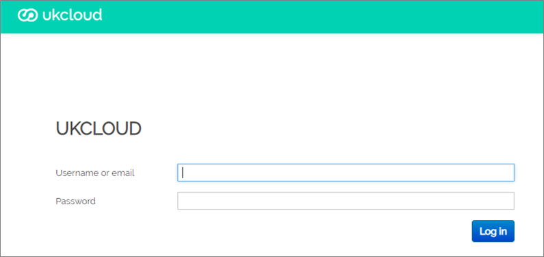

How to manage My Calls users
Overview
My Calls is the one‑stop place, accessed via the UKCloud Portal, to raise new support tickets (incidents and requests) with UKCloud and monitor existing tickets.
This article shows how to create new My Calls users and how to manage permissions for those users.
Intended audience
This article is intended for Portal administrators who want to provide Portal users with access to My Calls and manage the permission levels of those users. To perform the tasks in this article you must be able to log in to the UKCloud Portal with the My Calls Admin My Calls permission.
Setting up a new My Calls user
You can grant an existing Portal user access to My Calls.
Tip
To create a new Portal user, see How to create a new user.
Log in to the UKCloud Portal.
For more detailed instructions, see the Getting Started Guide for the UKCloud Portal.
In the Portal navigation panel, expand the Contacts option and select All Contacts.

Locate the user to whom you want to grant My Calls permissions and click the Edit button.

Select the My Calls Permissions tab.

Note
If you receive an error message, contact UKCloud Support at support@ukcloud.com.
Select My Calls access for this User and click Save.

Note
To be able to access My Calls, the user must have logged into the Portal previously.
The user should now be able to access My Calls with the permission level My Tickets. To change their permission level, see Managing My Calls user permissions.
Managing My Calls user permissions
You can manage the My Calls permission level for Portal users across your account.
My Tickets - Users with this permission level can raise support tickets and view and update the tickets that they have raised
Account Tickets - Users with this permission level can raise support tickets and view and update any ticket raised against the account (including those raised by other users)
My Calls Admin - Users with this permission level can raise support tickets, view and update any ticket raised against the account (including those raised by other users) and manage the My Calls permission levels of other users
In the Portal navigation panel, expand the Support option and select My Calls.

Click Go to My Calls Portal.
For additional security, re-enter your UKCloud Portal user credentials to access My Calls.

If two-factor authentication (2FA) has been enabled for your account, you'll be prompted to enter a six digit code. Use your 2FA app to generate the code and enter it here.
Select the Role Administration tab.

From the list of users, select the user that you want to edit.

Tip
You can filter the list of users or use the search field to find a specific user.
Select the permission level you want to apply to the user: My Tickets, Account Tickets or My Calls Admin.
The options offered will depend on the current role assigned to the user. Each user can have only one permission level, so the option you select here replaces any previous permissions.

When you're done, click Save.
Disabling a new My Calls user
If you need to disable a user on your account from accessing My Calls:
In the UKCloud Portal navigation panel, expand the Contacts option and select All Contacts.
Locate the user for whom you want to disable My Calls access and click the Edit button.
Select the My Calls Permissions tab.
Note
If you receive an error message, contact UKCloud Support at support@ukcloud.com.
Deselect My Calls access for this User and click Save.

The user will no longer be able to access My Calls.
Next steps
For information about raising support tickets for incidents and service requests, see How to use My Calls in the UKCloud Portal
For more information about the UKCloud support process, see How to raise and escalate incidents and service requests
For information about what else you can do in the UKCloud Portal, see the Getting Started Guide for the UKCloud Portal
Feedback
If you find a problem with this article, click Improve this Doc to make the change yourself or raise an issue in GitHub. If you have an idea for how we could improve any of our services, send an email to feedback@ukcloud.com.